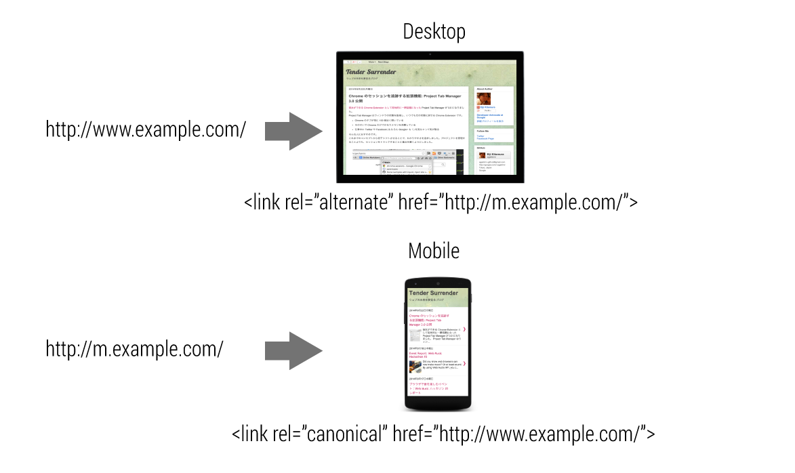
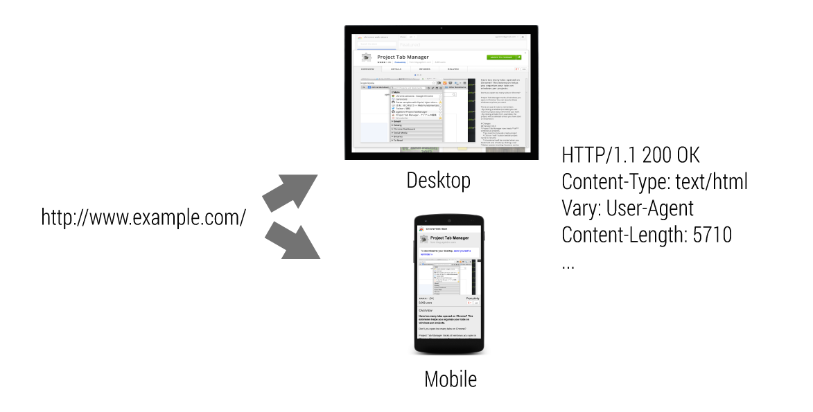

Are you planning to build your webpage responsive? Is there a mobile specific
version with a separate URL? Are you serving both desktop version and mobile
version from the same URL? You might be able to do a better job optimizing your
website for search engines.
Determine URL structure of your webpage
There are several ways to serve content to different devices. The three most
common methods are:
- Responsive Web Design: serves the same HTML for one URL and uses CSS
media queries to determine how the content is rendered on the client side.
ex) Desktop and Mobile: http://www.example.com/
- Separate mobile site: redirects users to a different URL depending on the
user-agent.
ex) Desktop: http://www.example.com/ Mobile: http://m.example.com/
- Dynamic serving: serves different HTML for one URL depending on the user-
agent.
ex) Desktop and Mobile: http://www.example.com/
The best approach we recommend is to use responsive web design, but a lot of
websites already serve mobile specific version. Some serves mobile version using
the same URL as desktop.
Determine which URL structure suits your webpage. Then try respective best
practices to optimize it for search engines.
Responsive Web Design is recommended
If you are planning to make your website responsive, you are already good. The
benefit of making your website responsive is:
- User friendly for sharing
- Quicker page load without redirects
- Single point of URL for search results

By making it responsive:
- Easier for users to access or share your webpage
- No need to redirect users depending on user agent so it is faster
- Maintenance cost is lower for both website and crawlers
Learn how to build your website with responsive web design at Multi-Device
Layouts section.
Use link[rel=canonical] and link[rel=alternate] when serving from separate URLs
Serving similar contents on a desktop version and a mobile version at different
URLs may cause confusion for both users and search engines because it’s not
obvious for viewers that they are intended to be identical. You should indicate:
- Contents of those 2 URLs are identical
- Which is mobile version
- Which is desktop (canonical) version
This information can help search engines better index content and ensure users
find what they’re looking for in a format that works for their device.
Use link[rel=alternate] for desktop version
On desktop page, indicate that there’s a mobile version on a different URL by
adding link tag with rel="alternate" pointing to mobile version URL with
href. By adding media attribute with value of "only screen and (max-width:
640px)" will help search engines understand that this is explicitly targeting
small screens.
http://www.example.com/ HTML
<title>...</title>
<link rel="alternate" media="only screen and (max-width: 640px)" href="http://m.example.com/">
Use link[rel=canonical] for mobile version
On mobile specific pages, indicate that there’s a desktop (canonical) version at
a different URL by adding link tag with rel="canonical" pointing to desktop
version URL with href.
http://m.example.com/ HTML
<title>...</title>
<link rel="canonical" href="http://www.example.com/">

Serving different HTML based on device type can reduce unnecessary redirects,
serves optimized HTML, provides single URL for search engines, but it also has
several disadvantages:
- There may be intermediate proxies between user’s browsers and the server.
Unless the proxy knows the content varies depending on user agent, it may serve
unexpected results.
- Changing contents depending on user agent has a risk to be considered as
cloaking, a violation of
Google’s Webmaster Guidelines.
By letting search engines know that the content varies depending on user agent,
they can optimize search results for the user agent that is sending queries.
In order to indicate that the URL serves different HTML depending on user agent,
provide Vary: User-Agent in HTTP header.
http://www.example.com/ HTTP Header
HTTP/1.1 200 OK
Content-Type: text/html
Vary: User-Agent
Content-Length: 5710

By providing Vary: User-Agent header, search engines and proxies understand
the transferred content may vary depending on user agent. This allows search
index to treat desktop version and mobile version separately, intermediate
proxies to cache those contents gracefully.
To learn more about building URL structure across desktop and mobile, read Building Smartphone-Optimized Websites.